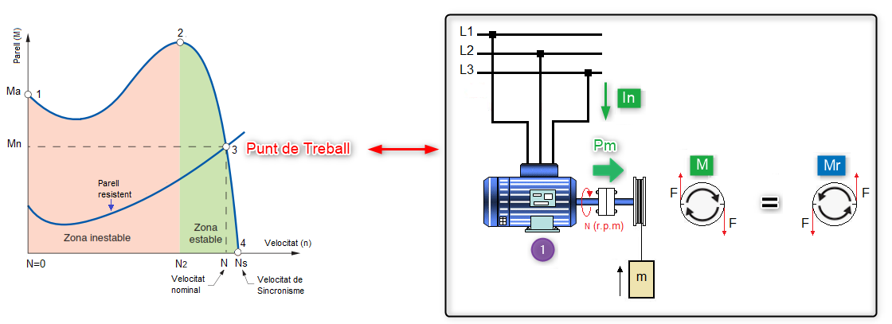
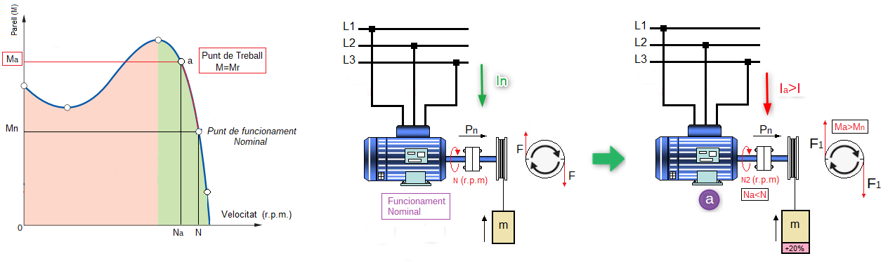
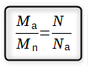
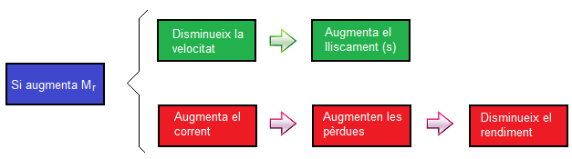
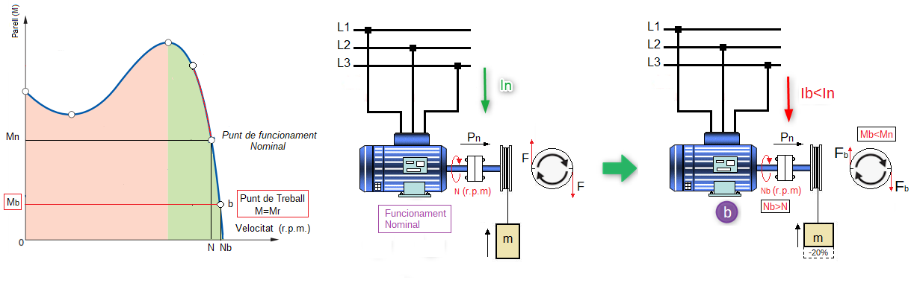
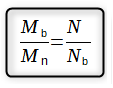
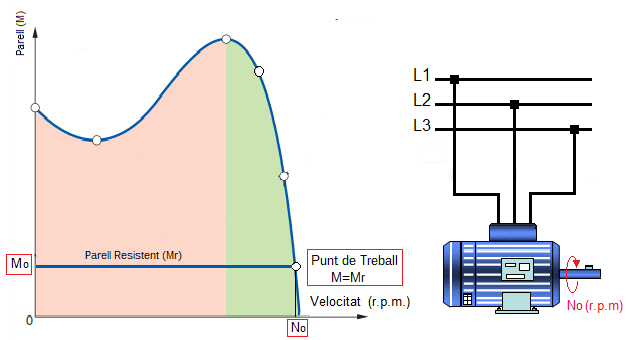

Zona de Treball del Motor d'Inducció
Funcionament Nominal
Hem vist anteriorment que el motor treballa en condicions nominals quan l'equilibri entre el parell motor i el parell resistent es produeix a velocitat nominal (N) (veure imatge).

Ara bé, el punt de treball o d'equilibri entre el parell motor i el parell resistent, no sempre es dona a velocitat nominal. Aquest punt pot ser qualsevol dels compresos entre el punt 3 (parell màxim) i el punt 4 (Parell=0). Aquesta Zona rep el nom de "Zona Estable" i està pintada de color verd en el gràfic anterior.
A continuació anem a veure dos situacions de treball en la que es pot trobar el motor d'inducció:
- Estan en funcionament nominal es produeix un augment del parell resistent
- Estan en funcionament nominal es produeix una disminució del parell resistent

- El Motor ha d'augmentar el seu parell motor per igualar al nou parell resistent. Per tant, el nou punt de treball del motor passa a ser el punt a.
- Aquest augment de parell implica que el motor ha de consumir també més corrent (I>In → sobrecàrrega). Aquesta sobrecàrrega produeix més pèrdues per calor i per tant disminueix el rendiment del motor.
- Una altra característica dels motors d'inducció és que aquests motors treballen a potència constant (P2=P1=Pn). Per tant, un augment del parell implica necessàriament una disminució en la velocitat de rotació del motor (Ma>Mn → Na<N).


- En disminuir la velocitat el lliscament (s) augmenta.
Resum:


- El Motor disminueix el seu parell motor per igualar al nou parell resistent. Per tant, el nou punt de treball del motor passa a ser el punt b.
- Aquesta disminució de parell implica que el motor ha de consumir també meyns corrent (Ib<In).
- Una altra característica dels motors d'inducció és que aquests motors treballen a potència constant (P2=P1=Pn). Per tant, una dsiminució del parell implica necessàriament un augment en la velocitat de rotació del motor (Mb<Mn → Nb>N).

- En augmentar la velocitat del rotor el lliscament (s) disminueix.
Un cas particular del funcionament del motor d'inducció és dona quan aquest no té cap càrrega mecànica acoblada a l'eix (funcionament en buit). En aquest cas, el motor només ha de vèncer una sèrie de càrregues mínimes com són els fregaments i per tant podem considerar que el parell resistent és molt baix i a més constant. La velocitat (No) on s'assoleix l'equilibri entre el parell resistent i el parell motor és molt propera a la velocitat de sincronisme Ns i el lliscament en aquest cas és molt baix.

Licencia: licencia de software libre GPL